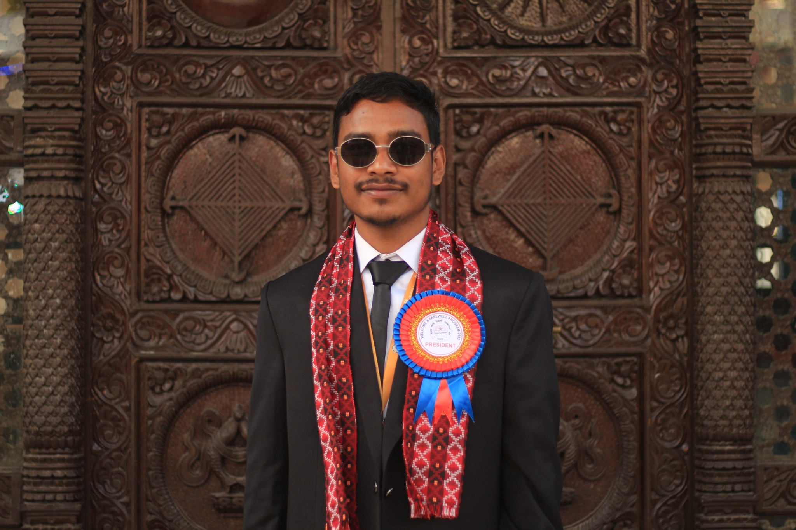
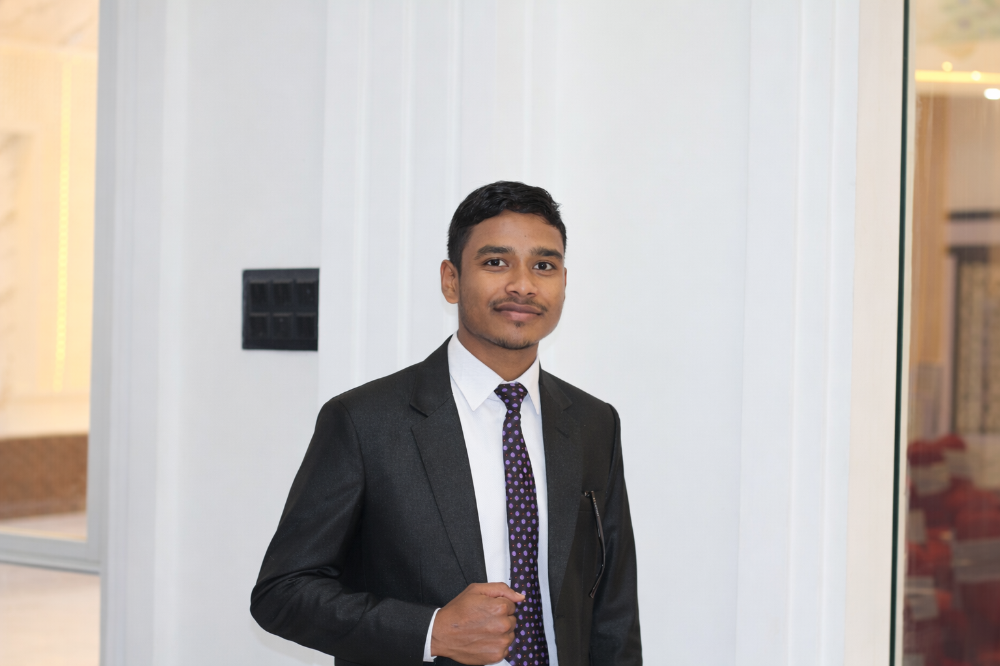

01 · SUSTAINABLE ENERGY
Green Hydrogen Production Using Alkaline Water Electrolysis
Exploring alkaline water electrolysis for green hydrogen production using renewable electricity, with a focus on process simulation and equipment modelling.
I'm a fourth-year Chemical Engineering student at Pulchowk Campus, exploring process design, simulation, sustainable energy, and green hydrogen while building practical engineering solutions.


I'm a fourth-year Chemical Engineering student at Pulchowk Campus, Institute of Engineering, Tribhuvan University, with a strong interest in process engineering, simulation, sustainable energy, and industrial technologies.
I enjoy turning engineering concepts into practical solutions, from process modelling and equipment design to exploring emerging technologies such as green hydrogen and alkaline water electrolysis.
Beyond engineering, I value leadership, teamwork, communication, and community involvement. I enjoy organizing initiatives, collaborating with people, and taking on challenges that push me to learn something new.
My long-term goal is to build a career in process engineering and sustainable technologies, contributing to innovative projects that create practical value for industries and society.
A growing toolkit spanning core chemical engineering, process systems, sustainable technologies, and collaborative leadership.
Core engineering fundamentals
Flowsheets & process thinking
Modelling & simulation
Process simulation platform
Separation fundamentals
Thermal process analysis
Industrial process concepts
Equipment sizing & selection
Engineering models
Low-carbon technologies
Renewable H₂ systems
Electrochemical systems
Structured engineering research
Collaboration & coordination
Academic and technical work focused on process understanding, design, simulation, and industrial applications.
Exploring alkaline water electrolysis for green hydrogen production using renewable electricity, with a focus on process simulation and equipment modelling.

Academic process design project focused on the manufacturing process, unit operations, material balance, and industrial considerations involved in canned mushroom production.

Study and design of a rotary drum drying system, including operating principles, heat and mass transfer considerations, and industrial applications.

Process study involving purification using short-path distillation and analysis of separation principles.

Chemical process industry project covering formulation, manufacturing process, equipment, and industrial production considerations.
Worked in student leadership, coordinating initiatives, organizing programs, collaborating with students, and contributing to community-oriented activities.
Fourth-year student developing a practical foundation across Chemical Engineering, Process Design, Mass Transfer, Heat Transfer, Chemical Process Industries, and Process Simulation.
Don’t ask for confidence, ask for fearlessness.— Acharya Prashant
I'm always open to learning, collaborating, discussing engineering ideas, and exploring interesting opportunities.